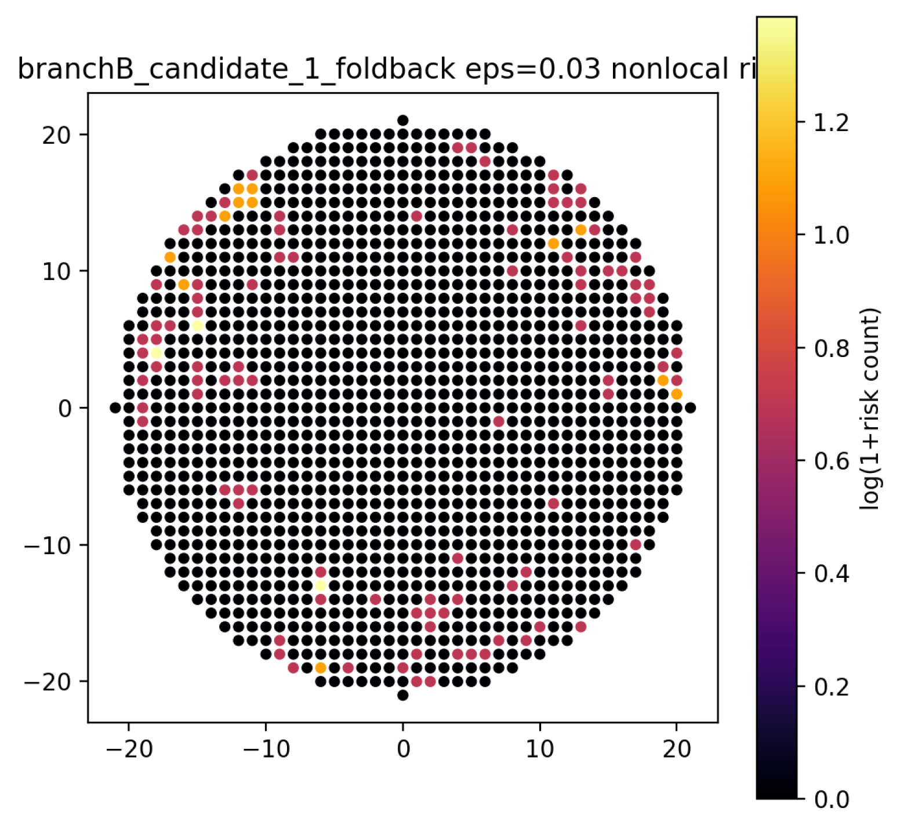
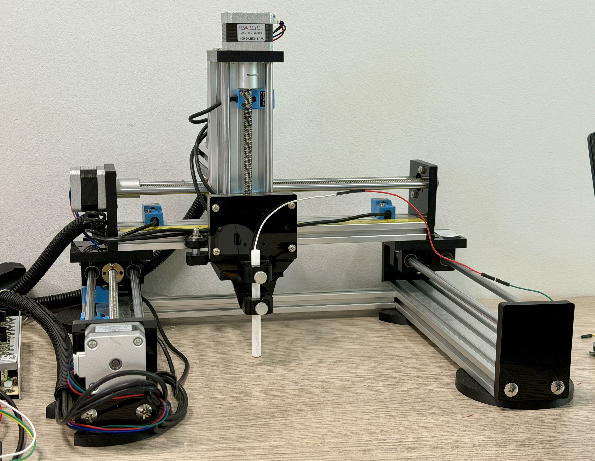
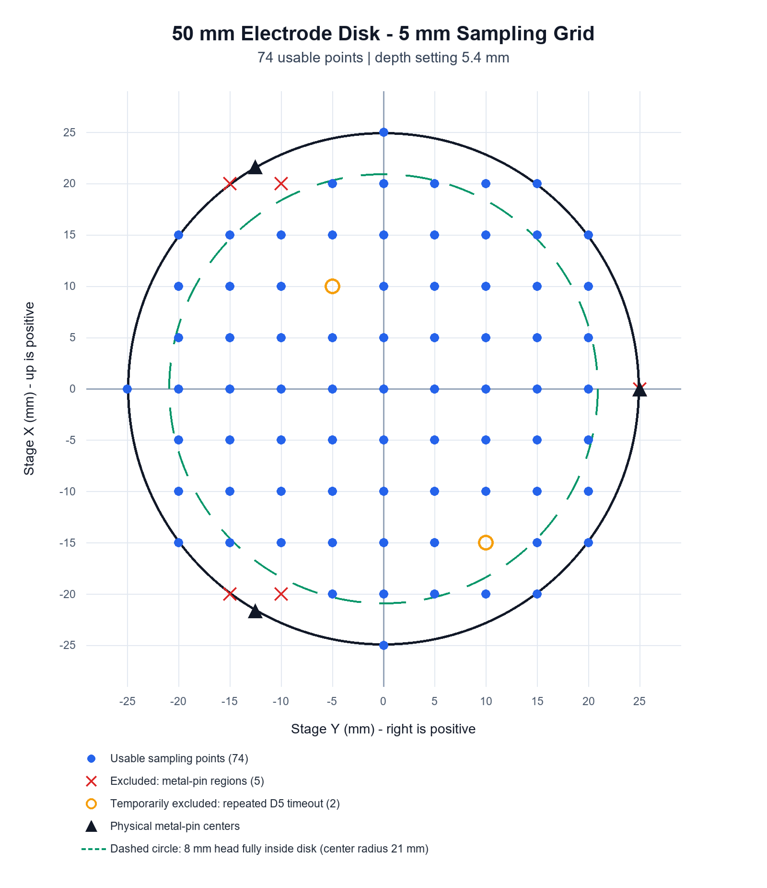

Reduce spatial ambiguity
Optimise the electrode geometry so neighbouring responses change more continuously, with less local overlap and less degradation near the boundary.
01 · SENSING · ONGOING RESEARCH
Finer-grained touch localisation on two-dimensional surfaces with fewer physical sensing channels.

High-resolution tactile surfaces often rely on dense arrays of discrete sensing elements. Increasing the number of elements also increases the burden of wiring, packaging, crosstalk management, and readout.[1][2]
Row–column multiplexing reduces the number of connections, but it still requires regular arrays, multilayer electrodes, and peripheral scanning circuits. Other low-wire methods simplify the interface while limiting spatial resolution or making the signals harder to interpret.[2][3]
This project examines whether electrode geometry can encode position directly. It combines computational design, controlled measurement, and machine learning to test whether a rapidly fabricated surface with few channels can distinguish locations more finely than its channel density would suggest. The work draws on tactile super-resolution research and focuses on geometric separability in planar capacitive surfaces.[1][4]
01
Electrode geometry is treated as a design variable that can be computed and tested.
The electrode patterns are designed to produce a recognisable combination of responses at each sampled location. Maximising signal strength alone is insufficient. With only a few channels, responses must also remain stable and distinguishable across the surface.
The design process moves between parametric drawing, simulation, fabrication, and measurement. Some variants produce strong signals but similar responses at distant locations. Others perform well numerically but require line widths, spacing, or connections that are unsuitable for rapid fabrication. The final geometry must balance signal-to-noise ratio, spatial separability, continuity, and manufacturability.
Figure 2 applies 3% signal noise as a conservative test condition and identifies locations where responses may overlap. Clusters near the boundary are diagnostic outputs, not the final electrode shape. They indicate parameter settings that may create indistinguishable regions.
Because the research is unpublished, this page presents overlap risk without revealing the complete production electrode pattern.


02
Contact conditions are controlled before geometry and localisation performance are compared.
Manual touch varies in position, contact area, pressure, angle, and duration. If these factors change together, differences in the recorded response cannot be attributed confidently to the electrode geometry.
An automated three-axis rig provides a consistent experimental baseline. The probe moves to predefined grid locations and repeats the same sequence at each point: baseline acquisition, controlled contact, signal recording, and reset. This procedure is used across geometry variants and repeated trials.
The resulting dataset supports more than point-wise accuracy. It also reveals measurement repeatability, separability near the boundary, and the regions that become ambiguous first as noise increases.
03
Discrete calibrated positions can be classified reliably; continuous localisation remains unresolved.
The current prototype uses a k-nearest neighbours (KNN) classifier to localise touch across 69 calibrated positions sampled at 5 mm intervals. In controlled repeated trials, classification accuracy exceeds 99%, including for samples near the edge of the disc.[Project result]
These results suggest that designed electrode geometry can support stable classification boundaries with few physical channels. The finding is limited to the calibrated position set. It does not establish continuous coordinate estimation at arbitrary locations. Predictions are less reliable for positions absent from the training data, and similar responses from neighbouring positions still constrain interpolation and generalisation.

04
The next stage moves beyond discrete calibration towards continuous localisation and less constrained forms of touch.
Optimise the electrode geometry so neighbouring responses change more continuously, with less local overlap and less degradation near the boundary.
Test how finger contact area, pressure, posture, and individual differences affect the classification boundaries established with the mechanical probe.
Evaluate the method on curved surfaces and three-dimensional objects, including the effects of deformation, curvature, and manufacturing error on spatial encoding.
Role: research design, computational electrode design, physical prototyping, experimental systems, data analysis, and visual communication.
REFERENCES